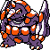

#285
Rhyperior
GroundRock
Abilities: Solid Rock, Reckless, Sheer Force
Base stats BST 535
HP115
Attack140
Defense130
Speed40
Sp. Atk55
Sp. Def55
Evolution
None detected.
Level-up learnset
LevelMoveType
Lv. 1Tail WhipNormal
Lv. 1TackleNormal
Lv. 1Thunder FangElectric
Lv. 1Horn AttackNormal
Lv. 4Fury AttackNormal
Lv. 7Scary FaceNormal
Lv. 10BulldozeGround
Lv. 13StompNormal
Lv. 16Rock BlastRock
Lv. 22Take DownNormal
Lv. 28CrunchDark
Lv. 31Rock SlideRock
Lv. 34Double-EdgeNormal
Lv. 38MegahornBug
Lv. 42EarthquakeGround
Lv. 54Stone EdgeRock
Lv. 68Horn DrillNormal